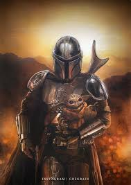

El Mandaloriano
Definitivamente llegó para quedarse, no esta dentro de los tres primeros lugares porque apenas lleva 2 años por el barrio, pero el y su pequeño acompañante vinieron a ocupar un lugar dentro de los consentidos.
